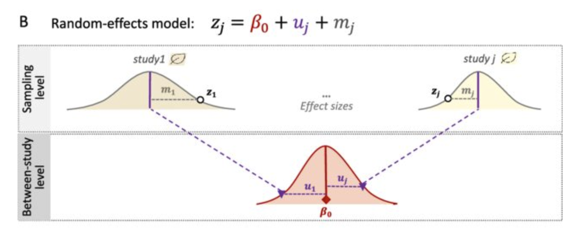
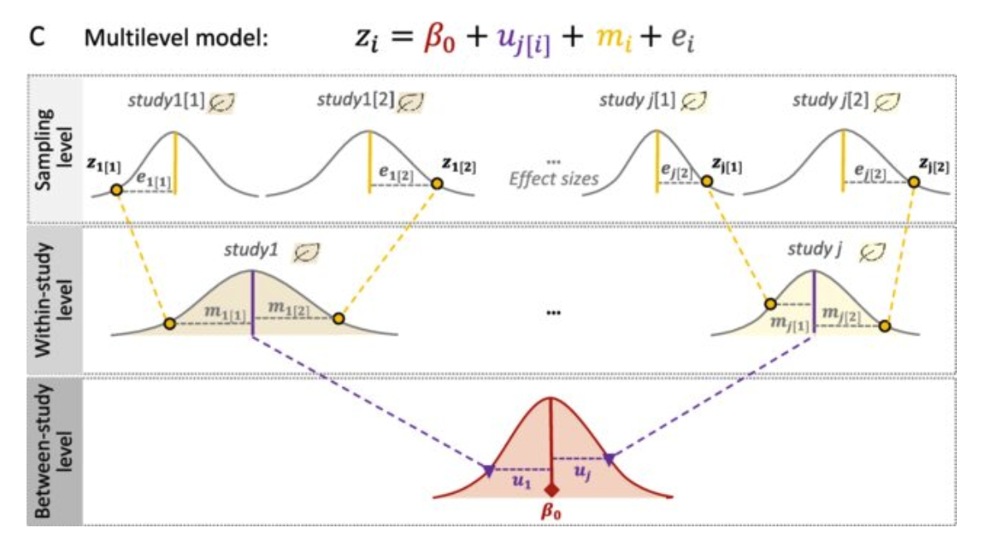

How to calculate and combine effect-sizes?
September 2024
CIRAD-Hortsys
Pooling Effect Sizes
Pooling effect sizes is essential for synthesizing results across studies in meta-analysis. Different models can be employed based on the data structure and assumptions.
Fixed-Effect Model
The Fixed-Effect Model assumes that all studies estimate the same underlying effect size.
Key Features:
- Assumes homogeneity of effect sizes across studies.
- Only one common effect size is estimated.
Formula:
\[ \hat{\theta}_k = \theta + \varepsilon_k, \quad \varepsilon_k \sim \mathcal{N}(0, s_k^2) \]
Fixed-Effect Model
Weighting:
\[ \bar{\theta}_w = \frac{\sum_{i=1}^{k} w_i \hat{\theta}_i}{\sum_{i=1}^{k} w_i} \]
Where:
bar_theta_w is the weighted average effect size across ( k ) studies.
hat_theta_i is the estimated effect size for the ( i )-th study.
w_i is the weight for the ( i )-th study.
v_i is the variance of the ( i )-th study.
and with weights equal to 𝑤𝑖=1/𝑣𝑖
Fixed-Effect Model
Let’s say: trueRR=1.5; and \[\hat{\theta}_k = \theta + \varepsilon_k\]
#| standalone: true
#| viewerHeight: 600
# Load necessary libraries
library(shiny)
library(metafor)
library(ggplot2)
library(truncnorm)
# Define UI
ui <- fluidPage(
titlePanel("Forest Plot with Fixed Effect Model"),
sidebarLayout(
sidebarPanel(
sliderInput("sd_true", "Standard Deviation of True Effect Size:",
min = 0, max = 1, value = 0.05, step = 0.01),
sliderInput("sd_sampling", "Standard Deviation of Sampling Error:",
min = 0, max = 1, value = 0.2, step = 0.01),
sliderInput("n_studies", "Number of Studies:",
min = 1, max = 100, value = 5, step = 1)
),
mainPanel(
plotOutput("forestPlot")
)
)
)
# Define server logic
server <- function(input, output) {
output$forestPlot <- renderPlot({
# Set parameters
set.seed(113) # For reproducibility
true_effect_size <- 1.5 # Specify a true effect size (e.g., ratio)
sd_true <- input$sd_true
sd_sampling <- input$sd_sampling
n_studies <- input$n_studies
sample_sizes <- sample(20:100, n_studies) # Random sample sizes for each study
# Generate studies data
studies <- data.frame(
study = paste("Study", 1:n_studies),
n = sample_sizes
)
# Generate random effect sizes with associated sampling error
studies$mean_ratio <- true_effect_size+rnorm(n_studies, mean = 0, sd = sd_sampling)
# Generate standard errors from a truncated normal distribution
studies$se <- rtruncnorm(n_studies, a = 0, mean = 0.2, sd = 0.1)
# Calculate confidence intervals
studies$ci_lower <- studies$mean_ratio - 1.96 * studies$se
studies$ci_upper <- studies$mean_ratio + 1.96 * studies$se
studies$color = 2
# Calculate mean and CI for the overall effect size using a fixed-effects model
fixed_effect <- rma(yi = mean_ratio, sei = se, method = "FE",data=studies)
fixed_effectUN <- rma(yi = mean_ratio, sei = se, method = "FE",weighted=FALSE,data=studies)
# Extract relevant information from the fixed_effect object
summary_table <- data.frame(
study = "Overall_weighted",
n = NA,
mean_ratio = fixed_effect$b,
se = NA, # Standard error not directly available for overall effect size
ci_lower = fixed_effect$ci.lb,
ci_upper = fixed_effect$ci.ub,
color = 1
)
# Extract relevant information from the fixed_effect object
summary_tableUN <- data.frame(
study = "Overall_unweighted",
n = NA,
mean_ratio = fixed_effectUN$b,
se = NA, # Standard error not directly available for overall effect size
ci_lower = fixed_effectUN$ci.lb,
ci_upper = fixed_effectUN$ci.ub,
color = 1
)
# Combine study data with overall effect size
plot_data <- rbind(studies, summary_table)
plot_data <- rbind(plot_data, summary_tableUN)
# Create forest plot
forest_plot <- ggplot(plot_data, aes(x = reorder(study, rev(study)), y = mean_ratio)) +
geom_errorbar(aes(ymin = ci_lower, ymax = ci_upper), width = 0.2, size = 1) +
geom_point(aes(color = factor(color))) +
geom_hline(yintercept = true_effect_size, linetype = "dashed", color = "blue") +
labs(title = "Forest Plot : Fixed Effect Model",
subtitle = paste("I² = ", round(fixed_effect$I2, 2), "%"),
x = "Studies",
y = "Effect Size (Ratio)") +
theme_minimal() +
theme(legend.position = "none") + # Remove legend for clarity
coord_flip() +
# geom_rect(aes(xmin = -Inf, xmax = Inf, ymin = true_effect_size - 1.96 * sd_true, ymax = true_effect_size + 1.96 * sd_true),
# fill = "blue", alpha = 0.1)+
geom_point(aes(size = 1/se, color = factor(color))) +
scale_size_continuous(range = c(2, 5))+
geom_text(aes(x=reorder(study, rev(study)), y=0.5, label=paste0("n=",n)))+
geom_hline(yintercept = true_effect_size, linetype = "dotted", color = "blue")
# Display the forest plot
print(forest_plot)
})
}
# Run the application
shinyApp(ui = ui, server = server)Fixed-Effect Model

Limitations of Fixed-Effect Models
The outcome of interest could have been measured in many ways.
The type of treatment may not have been exactly the same.
The intensity and duration of treatment could differ.
The target population of the studies may not have been exactly the same for each study.
The control groups used may have been different.
Random-Effects Model
The Random-Effects Model accounts for variability among studies, assuming that effect sizes vary due to different study conditions.
Formula:
\[\hat{\theta}_k = \mu + \zeta_k + \epsilon_k ; \quad \mathcal\zeta_k \sim {N}(0, 𝒯^2) ; \quad \mathcal\epsilon_k \sim {N}(0, s_k^2)\]
- hat_theta_k: Estimated effect size for study ( k ).
- mu : The overall mean (or meta-analytic mean).
- 𝜁_𝑘: Random effect for study ( k ),𝒯^2 is the between-study variance.
- epsilon_k: error term, sk2is the within study variance
Random Model Estimation
- The weights are defined as:
\[ w_i^* = \frac{1}{s_k^2 + \tau^2} \]
Where:
- ( _k ): Estimated effect size for study ( k ).
- ( ): The overall mean (or meta-analytic mean).
- ( _k (0, ^2) ): Random effect for study ( k ), where ( ^2 ) is the between-study variance.
- ( _k (0, v_k) ): Within-study error term for study ( k ), where ( v_k ) is the variance of the effect size estimate for study ( k ).
Heterogeneity : I² Statistic
Definition:
- I² (I-squared) is a measure of the percentage of variation across studies that is attributable to heterogeneity rather than chance.
Importance:
- Understanding I² helps researchers assess the consistency of results across studies.
- It informs decisions on whether to use fixed or random effects models in meta-analyses.
Calculation:
- I² is calculated from the Q statistic:
\[ I² = 100\% \times \frac{\tau^2}{\tau^2 + s^2}\]
Where: 𝒯^2 is the between-study variance. sk2is the within study variance
I² Statistic
- Considerations:
- High I² values do not always imply that meta-analysis is inappropriate.
- Subgroup analyses and meta-regressions can help explore sources of heterogeneity.
- Interpretation:
- 0%: No heterogeneity. All studies have similar effects.
- 1-25%: Low heterogeneity. Minor variations among studies.
- 25-50%: Moderate heterogeneity. Some differences in effects.
- 50-75%: Substantial heterogeneity. Notable variations among studies.
- 75-100%: Considerable heterogeneity. Major differences in effects.
Mixed Model Estimation
Let’s say: trueRR=1.5; and (𝜃_𝑘 ) ̂=𝜇+ 𝜁_𝑘+ 𝜀_𝑘
#| standalone: true
#| viewerHeight: 600
# Load necessary libraries
library(shiny)
library(metafor)
library(ggplot2)
library(truncnorm)
library(gridExtra)
# Define UI
ui <- fluidPage(
titlePanel("Forest Plot with Fixed Effect Model"),
sidebarLayout(
sidebarPanel(
sliderInput("sd_true", "Standard Deviation of True Effect Size:",
min = 0, max = 1, value = 0.05, step = 0.01),
sliderInput("sd_sampling", "Standard Deviation of Sampling Error:",
min = 0, max = 1, value = 0.2, step = 0.01),
sliderInput("n_studies", "Number of Studies:",
min = 1, max = 10, value = 5, step = 1),
checkboxInput("show_mean", "show_mean_without_sample_error", value = TRUE)
),
mainPanel(
plotOutput("forestPlot")
)
)
)
# Define server logic
server <- function(input, output) {
output$forestPlot <- renderPlot({
# Set parameters
set.seed(113) # For reproducibility
true_effect_size <- 1.5 # Specify a true effect size (e.g., ratio)
sd_true <- input$sd_true
sd_sampling <- input$sd_sampling
n_studies <- input$n_studies
sample_sizes <- sample(20:100, n_studies) # Random sample sizes for each study
# Generate studies data
studies <- data.frame(
study = paste("Study", 1:n_studies),
n = sample_sizes
)
# Generate random effect sizes with associated sampling error
studies$mean_1 <- rnorm(n_studies, mean = true_effect_size, sd = sd_true)
studies$mean_ratio<- studies$mean_1+rnorm(n_studies, mean = 0, sd = sd_sampling)
# Generate standard errors from a truncated normal distribution
studies$se <- rtruncnorm(n_studies, a = 0, mean = 0.2, sd = 0.1)
# Calculate confidence intervals
studies$ci_lower <- studies$mean_ratio - 1.96 * studies$se
studies$ci_upper <- studies$mean_ratio + 1.96 * studies$se
studies$color = 2
# Calculate mean and CI for the overall effect size using a fixed-effects model
random_effect <- rma(yi = mean_ratio, sei = se,data=studies)
fixed_effectUN <- rma(yi = mean_ratio, sei = se, method = "FE",weighted=FALSE,data=studies)
# Extract relevant information from the random_effect object
summary_table <- data.frame(
study = "Overall_random_effect",
n = NA,
mean_1 = NA,
mean_ratio = random_effect$b,
se = NA, # Standard error not directly available for overall effect size
ci_lower = random_effect$ci.lb,
ci_upper = random_effect$ci.ub,
color = 1
)
# Extract relevant information from the fixed_effect object
summary_tableUN <- data.frame(
study = "Overall_unweighted",
n = NA,
mean_1 = NA,
mean_ratio = fixed_effectUN$b,
se = NA, # Standard error not directly available for overall effect size
ci_lower = fixed_effectUN$ci.lb,
ci_upper = fixed_effectUN$ci.ub,
color = 1
)
# Combine study data with overall effect size
plot_data <- rbind(studies, summary_table)
plot_data <- rbind(plot_data, summary_tableUN)
k <- random_effect$k
wi <- 1/random_effect$vi
vt <- (k-1) * sum(wi) / (sum(wi)^2 - sum(wi^2))
tau_squared<- random_effect$tau2
total_variability <- vt + tau_squared
data <- data.frame(
VarianceType = c("Between-study Variance (τ²)", "Sampling Variability (σ²)"),
Proportion = c(tau_squared / total_variability, vt / total_variability)
)
# Create forest plot
p1<-forest_plot <- ggplot(plot_data, aes(x = reorder(study, rev(study)))) +
geom_errorbar(aes(ymin = ci_lower, ymax = ci_upper), width = 0.2, size = 1) +
geom_point(aes(y = mean_ratio,color = factor(color))) +
{if (input$show_mean) geom_point(aes(y = mean_1), color = "red", size = 4, pch = 8)
}+
geom_hline(yintercept = true_effect_size, linetype = "dashed", color = "blue") +
labs(title = "Forest Plot : Random Effect Model",
subtitle = paste("I² = ", round(random_effect$I2, 2), "%"),
x = "Studies",
y = "Effect Size (Ratio)") +
theme_minimal() +
theme(legend.position = "none") + # Remove legend for clarity
coord_flip() +
geom_rect(aes(xmin = -Inf, xmax = Inf,
ymin = true_effect_size - 1.96 * sd_true,
ymax = true_effect_size + 1.96 * sd_true),
fill = "blue", alpha = 0.05)+
geom_point(aes(y = mean_ratio,size = 1/se, color = factor(color))) +
scale_size_continuous(range = c(2, 5))+
geom_text(aes(x=reorder(study, rev(study)), y=0.5, label=paste0("n=",n)))+
geom_hline(yintercept = true_effect_size, linetype = "dotted", color = "blue")
p2<- ggplot(data, aes(x = "", y = Proportion, fill = VarianceType)) +
geom_bar(stat = "identity") + # Flip the axes for better readability
labs(title = "Proportions of Variance in Meta-analysis (I²)",
x = "",
y = "Proportion") +
scale_fill_manual(values = c("#FF9999", "#66B3FF")) + # Custom colors
theme_minimal() +
theme(legend.title = element_blank())+coord_flip()
# Display the forest plot
grid.arrange(p1, p2, ncol = 1, heights = c(3, 1))
})
}
# Run the application
shinyApp(ui = ui, server = server)Methods for Estimating τ²
- DerSimonian-Laird (DL): Widely used but underestimates with high heterogeneity.
- Restricted Maximum Likelihood (REML): Less biased, recommended for small samples.
- Hedges & Olkin (HO): Adjusted moment estimator.
- Paule-Mandel (PM): Performs well under high heterogeneity.
- Bayesian Estimation: Provides a distribution for τ², useful with prior knowledge.
Understanding Knapp-Hartung Adjustments
The Knapp-Hartung Adjustments are applied to improve the accuracy of confidence intervals in random-effects meta-analyses.
They adjust the standard errors of the pooled effect size to account for the uncertainty in estimating between-study variance (τ²).
More conservative than traditional methods, resulting in wider confidence intervals, especially when the number of studies is small or heterogeneity is high.
Recommended for meta-analyses with few studies (< 10).
Useful when between-study heterogeneity is suspected but difficult to quantify accurately.
Can prevent false positives by reducing the risk of overestimating precision.
Mixed Model Estimation

When a Two-Level Model Falls Short
- Does Not Handle Nested Data:
- Ignores study-level clustering (e.g., multiple outcomes or time points within a study).
- Overlooks Between-Group Variability:
- Cannot account for variability across different study groups (e.g., regions, experimental designs).
- Simplified Heterogeneity Structure:
- Assumes a single (^2), ignoring differences in heterogeneity across subgroups.
- Reduced Power with Small (k):
- Two-level models struggle to detect variance components when (k) (number of studies) is small.
- Ignores Dependency Structures:
- Cannot model dependencies between subgroups or repeated measures.
Three-Level Meta-Analytic Model
Overview
Three-level meta-analysis extends the traditional random-effects model by incorporating an additional level to account for dependencies in the data, such as multiple effect sizes within studies. This approach models the variability at three levels:
- Level 1: Sampling variability within effect sizes.
- Level 2: Variability between effect sizes within group
- Level 3: Variability between studies.
Purpose of the Model
The three-level model is ideal for datasets with hierarchical structures, allowing for accurate estimation of variance components and avoiding underestimation of standard errors. This model is frequently used when there are multiple outcomes per study or when primary studies include repeated measures.
Three-Level Meta-Analytic Model
Formula
\[\hat{\theta}_{ij} = \mu + \zeta_{(2)ij} + \zeta_{(3)j} + \epsilon_{ij}\]
\[\zeta_{(2)ij} \sim N(0, \tau_1^2); \quad \zeta_{(3)j} \sim N(0, \tau_2^2); \quad \epsilon_{ij} \sim N(0, s_{ij}^2)\]
Where:
- hat_theta_ikj: Estimated effect size for the i-th effect size in the j-th cluster
- mu: The overall mean effect size.
- _{(2)ij}: within-cluster heterogeneity
- _{(3)j}: between-cluster heterogeneity
- epsilon_ikj: Error term, with ( v_{ij} ) representing the sampling variance.
Cependant, si on reformule le modèle pour considérer un effet moyen spécifique à chaque groupe (_j), la notation devient :
\[theta_{ij} = \kappa_j + \zeta^{(2)}_{ij} + \epsilon_{ij}, \quad \text{avec} \quad \kappa_j = \mu + \zeta^{(3)}_j\]
\[Dans ce cas, (kappa_j) est l'effet moyen du groupe (j), et (\zeta^{(2)}_{ij} \sim N(0, \tau^2_2)\ reste centré autour de \(\kappa_j\).\]
Three level random effect model: weights
. - Weights for individual effect sizes are defined as:
\[ w_{ij} = \frac{1}{\tau_1^2 + \tau_2^2 + s_{ij}^2} \]
Three level random effect model
Let’s say RR=1.5; (𝜃_𝑘 ) ̂=𝜇+ 𝜁_((2)𝑗𝑘)+𝜁_((3)𝑗) 〖+ 𝜀〗_𝑗𝑘
#| standalone: true
#| viewerHeight: 600
# Load necessary libraries
library(shiny)
library(metafor)
library(ggplot2)
library(truncnorm)
library(gridExtra)
library(dplyr)
library(magrittr)
# Define UI
ui <- fluidPage(
titlePanel("Forest Plot with Three-Level Meta-Analytical Model"),
sidebarLayout(
sidebarPanel(
sliderInput("sd_true", "Standard Deviation of True Effect Size:",
min = 0, max = 1, value = 0, step = 0.01,),
sliderInput("sd_sampling", "Standard Deviation of Sampling Error:",
min = 0, max = 1, value = 0, step = 0.01),
sliderInput("sd_group", "Standard Deviation of Group Effect:",
min = 0, max = 1, value = 0, step = 0.01), # New slider for group effect variance
sliderInput("n_studies", "Number of Studies:",
min = 3, max = 15, value = 3, step = 1),
sliderInput("n_groups", "Number of Groups:",
min = 2, max = 5, value = 2, step = 1),
checkboxInput("show_mean", "Show mean without sample error", value = TRUE)
),
mainPanel(
plotOutput("forestPlot")
)
)
)
# Define server logic
server <- function(input, output) {
output$forestPlot <- renderPlot({
# Set parameters
set.seed(113) # For reproducibility
true_effect_size <- 1.5 # Specify a true effect size (e.g., ratio)
sd_true <- input$sd_true
sd_sampling <- input$sd_sampling
sd_group <- input$sd_group # Standard deviation for group effects
n_studies <- input$n_studies
n_groups <- input$n_groups
# Assign each study to a group
group_assignments <- rep(1:n_groups, length.out = n_studies)
# Generate studies data
studies <- data.frame(
study = paste("Study", 1:n_studies),
n = sample(20:100, n_studies), # Random sample sizes for each study
group = factor(group_assignments)
) %>% arrange(group) %>% mutate(study = paste("Study", 1:n_studies))
# Generate random group effects and add to the true effect sizes
tmp1<- rnorm(n_groups - 1, mean = 0, sd = sd_group)
group_effects <- c(tmp1,-sum(tmp1))
studies$group_effect <- group_effects[studies$group]
# Generate true effect sizes with associated group and sampling error
studies$group_effect<- studies$group_effect+ true_effect_size
tmp<- rnorm(n_studies - 1, mean = 0, sd = sd_true)
studies$mean_1 <- studies$group_effect+ c(tmp,-sum(tmp))
studies$mean_ratio <- studies$mean_1 + rnorm(n_studies, mean = 0, sd = sd_sampling)
# Generate standard errors from a truncated normal distribution
studies$se <-0.01+sd_sampling* rtruncnorm(n_studies, a = 0, mean = 0.1, sd = 0.1)
# Calculate confidence intervals
studies$ci_lower <- studies$mean_ratio - 1.96 * studies$se
studies$ci_upper <- studies$mean_ratio + 1.96 * studies$se
studies$color <- 2
# Calculate overall effect size using a three-level model
random_effect <- rma.mv(yi = mean_ratio, V = se^2, random = ~ 1 | group/study, data = studies)
# Create summary table for the overall effect size
summary_table <- data.frame(
study = "Overall_random_effect",
n = NA,
group = NA,
mean_1 = NA,
group_effect = NA,
mean_ratio = random_effect$b,
se = NA,
ci_lower = random_effect$ci.lb,
ci_upper = random_effect$ci.ub,
color = 1
)
# Combine study data with overall effect size
plot_data <- rbind(studies, summary_table)
# Create forest plot
p1 <- ggplot(plot_data, aes(x = reorder(study, rev(group)))) +
geom_errorbar(aes(ymin = ci_lower, ymax = ci_upper), width = 0.2, size = 1) +
geom_point(aes(y = mean_ratio, color = factor(group))) +
{if (input$show_mean) geom_point(aes(y = mean_1), color = "red", size = 4, pch = 8)} +
{if (input$show_mean) geom_point(aes(y = group_effect), color = "orange", size = 4, pch = 9)} +
geom_hline(yintercept = true_effect_size, linetype = "dashed", color = "blue") +
labs(title = "Forest Plot: Three-Level Meta-Analysis Model",
x = "Studies",
y = "Effect Size (Ratio)") +
theme_minimal() +
theme(legend.position = "none") +
coord_flip() +
geom_text(aes(x = reorder(study, rev(study)), y = 0.5, label = paste0("Group = ", group, "; n = ", n))) +
scale_size_continuous(range = c(2, 5)) +
geom_hline(yintercept = true_effect_size, linetype = "dotted", color = "blue")+
geom_rect(aes(xmin = -Inf, xmax = Inf,
ymin = true_effect_size - 1.96 * sd_true,
ymax = true_effect_size + 1.96 * sd_true),
fill = "blue", alpha = 0.05)
# Display the forest plot
p1
})
}
# Run the application
shinyApp(ui = ui, server = server)Three level random effect model
Subgroup Analyses
Definition
- Subgroup Analysis involves dividing studies into distinct groups based on specific characteristics to assess whether effect sizes vary across these groups.
Purpose
- To identify factors that influence the effect of an intervention and to better understand heterogeneity among study results.
When to Conduct Subgroup Analyses
Criteria for Subgroup Analysis
- Significant Heterogeneity: High I² values suggest further investigation is warranted.
- Hypothesis Testing: When researchers have specific hypotheses regarding differences in effects.
- Interest in Specific Populations: To evaluate how different demographics (e.g., age, gender) respond to an intervention.
Methodology of Subgroup Analyses
Statistical Approach
- Analyze subsets of data separately and compare effect sizes across groups.
- Use a meta-analytic model for each subgroup, maintaining consistency with overall methodology.
Formula
- For subgroup analyses, the overall model can be modified to include group-specific parameters:
\[ \hat{\theta}_{g,k} = \mu_g + \zeta_{g,k} + \epsilon_{g,k} \]
Where: - ( {g,k} ): Estimated effect size for study ( k ) in group ( g ). - ( g ): Overall mean effect for group ( g ). - ( {g,k} ): Random effect for study ( k ) in group ( g ). - ( {g,k} ): Error term for study ( k ) in group ( g ).
Meta-Regression
Definition
- Meta-Regression extends meta-analysis by examining how study-level covariates influence effect sizes.
Purpose
- To explore relationships between study characteristics (e.g., sample size, intervention duration) and observed effects.
Meta-Regression Methodology
Statistical Approach
- The meta-regression model includes covariates that may explain variability in effect sizes:
\[ \hat{\theta}_k = \mu + \beta_1 x_1 + \beta_2 x_2 + \ldots + \beta_p x_p + \zeta_k + \epsilon_k \]
Where: - ( x_i ): Study-level covariate. - ( _i ): Coefficient indicating the relationship between ( x_i ) and effect size.
Benefits of Meta-Regression
Advantages
- Identify Predictors of Variability: Helps clarify which factors influence intervention effectiveness.
- Informs Future Research Directions: Insights from meta-regression can guide future studies and hypotheses.
Challenges in Meta-Regression
Considerations
- Sample Size Requirements: Requires sufficient studies with varying characteristics for robust results.
- Complexity of Interpretation: Interactions among covariates can complicate understanding.
How to calculate and combine effect-sizes?